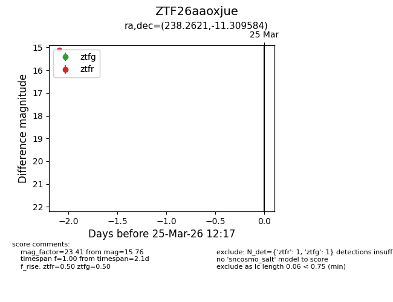
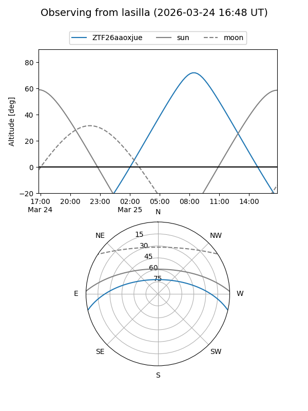
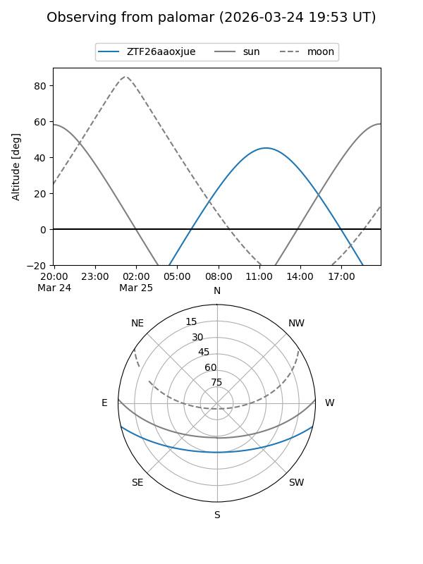

ZTF26aaoxjue
Target ZTF26aaoxjue at 2026-03-25 12:19
Aliases and brokers:
FINK: link
Lasair: link
ALeRCE: link
alt names
ZTF26aaoxjue (ztf,fink_ztf)
Coordinates:
equatorial (ra, dec) = 238.2621,-11.30958
equatorial (HMS+DMS) = 15:53:02.91,-11:18:34.50
galactic (l, b) = (357.9558,+31.55532)
Flags:
Photometry:
last ztfg=15.76, ztfr=15.11
1 ztfg, 1 ztfr detections
Lightcurve

Visibility


Additional plots